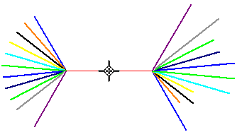
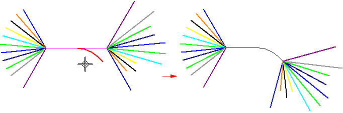

Insert a bend in a nailboard
-
Choose Diagram tab→Modify group→Insert Bend.
-
Select a point on a linear segment to specify the start point for the bend.

-
Edit the radius or sweep angle or click in the direction you want to bend the segment.

Note:If the selection is the main run, you have four choices for the bend direction, but you only have two choices if your selection is not the main run.
-
Click to place the bend.
Note:
You can use the Flip option on the Insert Bend command bar to flip the direction of the bend.

How do I
Edit a nailboard bendLearn more
Editing the flattened geometry in the nailboard viewLook up more details
Insert Bend commandInsert Bend command bar